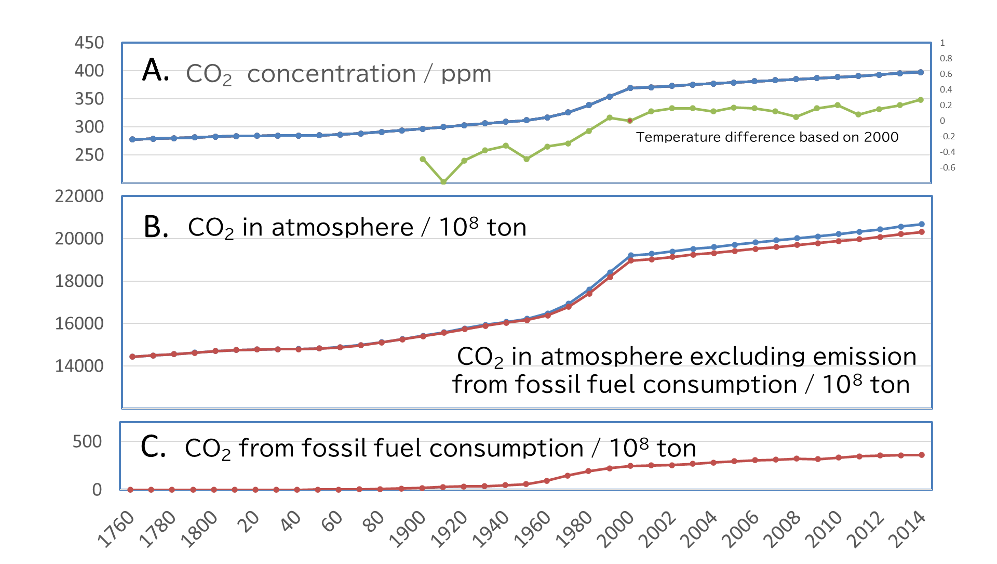

CO2 Emissions from Fossil Fuel Consumption
12/02 2022
Author: Haru-Hisa Uchida
Although global warming is becoming a growing concern, CO2 emissions associated with the annual consumption of fossil energy resources in human activities continue to increase. (Around 36 billion tons of CO2 per year). The following is a review of each of these figures around last two decades.

CO2 emitted from fossil energy resources consumed by human activities is released into the atmosphere, while CO2 in the atmosphere is assumed to be absorbed by the nature according to its partial pressure, by plants, by the ocean, and so on.
In nature, CO2 is released through respiration of bio-substances and decomposition of organic matter, and the difference between the amount released into the atmosphere and the amount absorbed is observed as the atmospheric concentration. (i.e. in Steady State)
Figure 1-A shows past and recent atmospheric CO2 concentrations and temperature changes relative to the year 2000 (NASA). Figure 1-B shows the amount of CO2 in atmosphere calculated from the CO2 concentration, assuming that the total amount of the earth's atmosphere is about 5200 trillion tons, CO2 is uniformly distributed in the atmosphere, and the average atmospheric pressure is constant. The lower line shows the amount of CO2 excluding the emission from the consumption of fossil energy resources, which is also shown in Figure 1-C.
If we look at the 14-year period from 2000 to 2014, we can see that the atmospheric concentration increased by about 28 ppm and the amount of CO2 in the atmosphere increased by about 140 billion tons, while the amount of CO2 resulting from the consumption of fossil energy resources increased by about 11.4 billion tons.
The amount of CO2 generated from fossil energy resources due to human activities is equivalent to about 8% of the amount estimated to be increased in the atmosphere. It can be seen that the increase in the amount of CO2 in the atmosphere, i.e., its concentration, is not due directly to the emissions associated with the consumption of fossil energy resources, but rather to an increase in the amount released in the balance between absorption and release to the natural world. The release of CO2 from natural environment due to rising average temperatures or a decrease in the absorption capacity of the natural world can be considered, but if we look at the past 10 to 20 years, we can also consider that the amount released due to human activities has been amplified by a factor of 10 or more in the natural world.